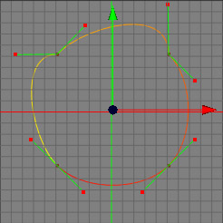

接線の向きをそろえる ツール
時には、同一線上にベジエ曲線の接線をそろえることは便利です。接線の向きをそろえる は、接線が同じ方向に向くのでは無く、共有するコントロールポイントを通る線上にそれらをそろえるツールです。
 
編集モード
接線の向きをそろえる は全ての編集モードで使用できます。ポイントモードでしかコントロールポイントや選択範囲が見えないので、ポイントモードで使用するのが良いでしょう。このスプラインツールは、ロースプラインオブジェクトでのみ使用できます。


接線の向きをそろえるを使うには、まず接線が直線上にのるべきスプラインのコントロールポイントを選択します。選択した後で、メニューコマンド "ツール スプラインツール接線の向きをそろえる" を呼び出します。選択した全ての接線は、コントロールポイントの接線がもう１つの接線と同一線上に並ぶ様に再配置されます。もし何も選択されていない場合、このコマンドは全ての接線にたいして実行されます。
スプラインツール接線の向きをそろえる" を呼び出します。選択した全ての接線は、コントロールポイントの接線がもう１つの接線と同一線上に並ぶ様に再配置されます。もし何も選択されていない場合、このコマンドは全ての接線にたいして実行されます。
補助キー
-
- なし
プロパティ
- なし